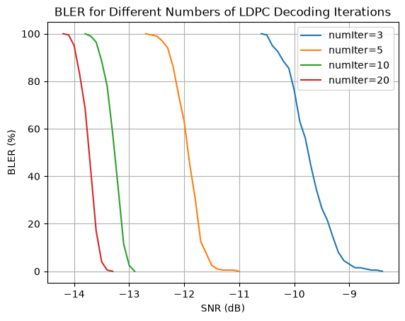

Effect of LDPC Decoding Iterations on PDSCH BLER
This notebook evaluates how the number of LDPC decoding iterations, controlled by numIter, affects the block error rate (BLER) of a 5G NR PDSCH link-level simulation.
For each value of numIter, the simulation runs an end-to-end PDSCH transmission over a CDL channel across a range of SNR values. The resulting BLER curves are then compared to show the trade-off between decoding performance and computational complexity.
[1]:
import numpy as np
import time
import matplotlib.pyplot as plt
from neoradium import BandwidthPart, PDSCH, CdlChannel, AntennaPanel, random, SnrScheduler
[2]:
numSlots = 200
snrScheduler = SnrScheduler(-12, 0.1, fastStep=1) # Start at -12 dB, use increments of 0.1 dB
bwp = BandwidthPart(numRbs=24, spacing=30) # Create the BandwidthPart object
# Create a PDSCH object
pdsch = PDSCH(bwp, numLayers=2, modulation="16QAM")
pdsch.setDMRS(additionalPos=1)
# Create an LDPC codec
ldpc = pdsch.getLdpcCodec(coderates=490/1024)
results = {}
for numIter in [3, 5, 10, 20]:
results[numIter] = {}
ldpc.cwCodecs[0].numIter = numIter
print(f"\nSimulating end-to-end with numIter = {numIter}")
print("SNR(dB) Total Blocks Block Errors BLER(%) Time(Sec.)")
print("--------- ------------ ------------ ------- ----------")
snrScheduler.reset()
for snrDb in snrScheduler:
random.setSeed(123) # Make the results reproducible for each SNR
t0 = time.monotonic() # Start time for each SNR
bwp.slotNo = 0
# Create a CdlChannel object
channel = CdlChannel(bwp, 'C', delaySpread=300, carrierFreq=4e9, dopplerShift=5,
txAntenna = AntennaPanel([2,4], polarization="x"), # 16 TX antenna elements
rxAntenna = AntennaPanel([1,2], polarization="x")) # 4 RX antenna elements
blockErrors = 0
totalBlocks = 0
for slotNo in range(numSlots):
pdsch.initGrid() # Create and initialize the PDSCH grid
txBlock = random.bits(ldpc.txBlockSizes[0]) # Random transport block
numBits = pdsch.getBitCapacity() # Bit capacity of the PDSCH grid
rateMatchedCodeBlocks = ldpc.encode(txBlock, numBits[0]) # LDPC rate-matching and encoding
pdsch.setPdschData(rateMatchedCodeBlocks) # Map/modulate encoded code blocks
channelMatrix = channel.getChannelMatrix() # Get the channel matrix
precoder = pdsch.getPrecodingMatrix(channelMatrix) # Precoder matrix
txGrid = bwp.createGrid(len(channel.txAntenna)) # Create a transmitted grid
pdsch.precodeTo(txGrid, precoder) # Precode data into txGrid
rxGrid = txGrid.applyChannel(channelMatrix) # Apply the channel
rxGrid = rxGrid.addNoise(snrDb=snrDb) # Add noise
estChannelMatrix = channel.getEffChannel(channelMatrix, precoder) # Get effective channel
eqGrid, llrScales = pdsch.equalize(rxGrid, estChannelMatrix) # Equalization
llrs = pdsch.getLLRs(eqGrid, llrScales) # Demodulation (to LLRs)
decodedTxBlock, crcMatch = ldpc.decode(llrs) # LDPC rate-recovery and decoding
blockErrors += 0 if crcMatch[0][0] else 1 # Update transport block errors
totalBlocks += 1 # Update number of transport blocks
bler = blockErrors*100/totalBlocks # BLER in percent
print(f"\r{snrDb:^9.1f} {totalBlocks:^12d} {blockErrors:^12d} "
f"{bler:^7.2f} {time.monotonic()-t0:^10.3f}", end='')
channel.goNext()
snrScheduler.setData(bler)
print("")
results[numIter] = snrScheduler.getSnrsAndData()
Simulating end-to-end with numIter = 3
SNR(dB) Total Blocks Block Errors BLER(%) Time(Sec.)
--------- ------------ ------------ ------- ----------
-12.0 200 200 100.00 47.749
-11.0 200 200 100.00 48.129
-10.0 200 152 76.00 48.385
-10.1 200 171 85.50 47.930
-10.2 200 177 88.50 50.028
-10.3 200 185 92.50 49.731
-10.4 200 190 95.00 48.801
-10.5 200 199 99.50 48.800
-10.6 200 200 100.00 49.082
-10.7 200 200 100.00 48.801
-9.9 200 126 63.00 49.032
-9.8 200 112 56.00 48.697
-9.7 200 89 44.50 49.137
-9.6 200 69 34.50 48.395
-9.5 200 53 26.50 49.073
-9.4 200 43 21.50 48.865
-9.3 200 29 14.50 48.663
-9.2 200 16 8.00 48.562
-9.1 200 9 4.50 49.055
-9.0 200 6 3.00 49.214
-8.9 200 3 1.50 48.992
-8.8 200 3 1.50 49.416
-8.7 200 2 1.00 48.679
-8.6 200 1 0.50 49.091
-8.5 200 1 0.50 49.189
-8.4 200 0 0.00 48.632
-8.3 200 0 0.00 48.859
Simulating end-to-end with numIter = 5
SNR(dB) Total Blocks Block Errors BLER(%) Time(Sec.)
--------- ------------ ------------ ------- ----------
-12.0 200 126 63.00 52.318
-12.1 200 148 74.00 52.423
-12.2 200 172 86.00 52.315
-12.3 200 188 94.00 52.186
-12.4 200 194 97.00 52.333
-12.5 200 198 99.00 52.376
-12.6 200 199 99.50 52.575
-12.7 200 200 100.00 52.544
-12.8 200 200 100.00 52.821
-11.9 200 90 45.00 52.602
-11.8 200 61 30.50 52.404
-11.7 200 25 12.50 52.434
-11.6 200 15 7.50 52.354
-11.5 200 5 2.50 52.079
-11.4 200 2 1.00 52.287
-11.3 200 1 0.50 52.222
-11.2 200 1 0.50 52.031
-11.1 200 1 0.50 53.185
-11.0 200 0 0.00 53.111
-10.9 200 0 0.00 52.540
Simulating end-to-end with numIter = 10
SNR(dB) Total Blocks Block Errors BLER(%) Time(Sec.)
--------- ------------ ------------ ------- ----------
-12.0 200 0 0.00 61.648
-13.0 200 5 2.50 61.457
-13.1 200 23 11.50 61.306
-13.2 200 70 35.00 61.472
-13.3 200 116 58.00 61.484
-13.4 200 156 78.00 61.636
-13.5 200 177 88.50 61.783
-13.6 200 193 96.50 61.788
-13.7 200 198 99.00 61.447
-13.8 200 200 100.00 61.277
-13.9 200 200 100.00 61.647
-12.9 200 0 0.00 61.282
-12.8 200 0 0.00 61.075
Simulating end-to-end with numIter = 20
SNR(dB) Total Blocks Block Errors BLER(%) Time(Sec.)
--------- ------------ ------------ ------- ----------
-12.0 200 0 0.00 78.873
-13.0 200 0 0.00 79.292
-14.0 200 190 95.00 79.669
-14.1 200 199 99.50 79.571
-14.2 200 200 100.00 82.799
-14.3 200 200 100.00 85.502
-13.9 200 166 83.00 82.014
-13.8 200 137 68.50 79.516
-13.7 200 86 43.00 78.345
-13.6 200 34 17.00 78.748
-13.5 200 8 4.00 82.770
-13.4 200 1 0.50 83.424
-13.3 200 0 0.00 81.942
-13.2 200 0 0.00 79.204
[3]:
# Compare the results in a plot
for i,numIter in enumerate([3, 5, 10, 20]):
plt.plot(results[numIter][0], results[numIter][1], label=f"numIter={numIter}")
plt.legend()
plt.title("BLER for Different Numbers of LDPC Decoding Iterations")
plt.grid()
plt.xlabel("SNR (dB)")
plt.ylabel("BLER (%)")
plt.show()

[ ]:
[ ]: